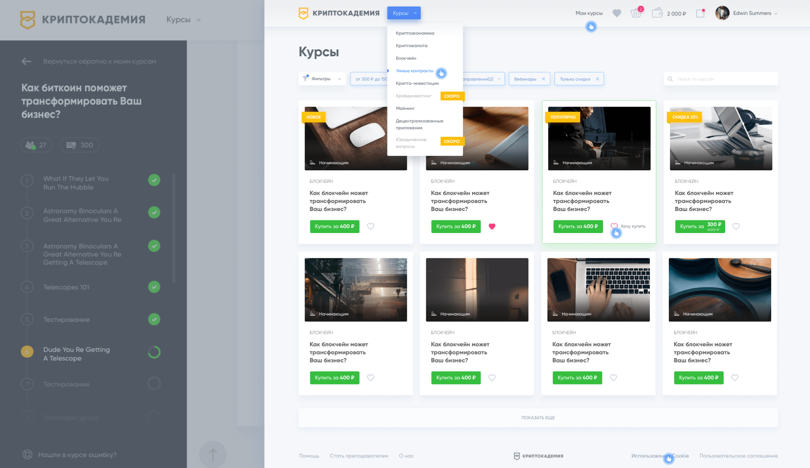

Алёна. Марсианский дизайнер
Привет! Я Алёна и дизайнер. С уважением слежу за деятельностью Марсиан уже не первый год и, конечно, не могу пройти мимо вакансии.
Занимаюсь проектированием и дизайном интерфейсов со старших классов школы, то есть лет 7. Сложные веб-сервисы для бизнеса, простые десктопные клиенты для государства, мобильные приложения на iOS и Android для людей, не говоря уже о лэндингах, баннерах и почтовых рассылках — от профессионального любопытства меня изрядно в жизни помотало.
Последнее место работы
За прошедшие полтора года выстроила дизайн-экосистему вокруг лайф-трекера GoBe 2. Мозги русских ученых, американские инвестиции и производство в Китае породили магическое устройство на стыке hard- и software. Браслет автоматически определяет, сколько калорий за день вы потребили, сильный ли стресс испытали и не обезвожен ли ваш организм. Человек вроде меня, одержимый промышленным дизайном, гаджетами и технологиями будущего, не смог пройти мимо.
Экосистема, состоящая из самого браслета, приложений под iOS и Android и личного кабинета на сайте, в каком-то виде существовала (для первого поколения устройств), но требовала немалой переработки. С маркетингом, почтовыми рассылками и прочими эмоциональными штучками было никак.
Как единственный продуктовый дизайнер в штате я занималась немалым пластом работ:
- Анализировала ситуацию на старте: что мы имеем и с чего начать маркетинговую экспансию. Инструменты: Google Analytics, опросы пользователей, конкурентный анализ.
- С продакт менеджером и командой планировала работу по итерациям: что нужно сделать как можно быстрее до вывода браслета в продажу, какие фичи можно реализовать позже и в каком порядке.
- Находила подрядчиков на фотосеты, рендеры и отдельные дизайн-задачи.
- Обновила мобильные приложения визуально и функционально.
Было: набор разномастных экранов, состоящих из большого количества кастомных элементов, что сильно снижало скорость разработки. А потом что-то в алгоритме браслета менялось и всё приходилось переделывать заново.

Стало: экраны, выполненные в едином стиле и состоящие из нативных системных элементов. Это позволило ускорить разработку и быстро тестровать новые фичи. Может, не столь эффектно выглядит, зато работает.
iOS:
Android:
- Создала несколько шаблонов email-рассылок для решения самых важных задач: системного отклика (спасибо за покупку браслета, не забыли ли вы чего в корзине и т.д.) и диалога с пользователем. Например, теперь людям приходят еженедельные репорты о состоянии организма за неделю.
- Запустила первую версию B2B проекта: дашборда, позволяющего диетологам вести группу худеющих «пациентов» на основании данных с браслета.
- Получала обратную связь с помощью команды техподдержки и intercom, составляла отчеты по обратной связи для команды, чтобы понять, какие проблемы требуют быстрого реагирования.
- Ежедневно общалась с разработчиками, составляла документацию на Confluence, узнавала от них кучу нового и немножко кодила на уровне html/css. Хочу и на java script научиться.
Итог: GoBe 2 назван одним из лучших проектов на CES 2017 (пруф). Сейчас неплохо продается в США, Китае и Японии. Третье поколение не за горами.
Участие в других проектах
В 19 лет запустила промо-сайт Контур.Эльбы и он всё ещё работает в почти первозданном виде (хотя уже и не выглядит столь современно).

В том числе проработала немалую часть внутренних интерфейсов Эльбы и поучаствовала в выпуске приложения на Android.
В паре с коллегой-дизайнером разработала приложение, с помощью которого до сих пор проводят заседания члены Евразийской экономической комиссии.
Участвовала в опенсорс-проекте по созданию алгоритма визуального поиска Velpas.
Спроектировала на заказ сервис, призванный превратить таск-менеджмент в игру: Жаль, что он не взлетел.
Отговорила Криптокадемию сразу же запиливать сложный сайт (при существующем лэндинге), предложив вместо этого набрать аудиторию на telegram-канале и соцсетях. Оформленные мною соцсети и рассылки кипят, сайт неспешно разрабатывается в фоновом режиме.
Графдизайн и иллюстрация — медитативные хобби. Для души вела проект-календарь 365 days of type. И привлекала к нему всех желающих поучаствовать. 10го декабря, после годового «отпуска», планирую возобновить это дело в свежем формате.
10го декабря, после годового «отпуска», планирую возобновить это дело в свежем формате.
Почему именно Марсиане?
Потому что вы очень круты, и я разделяю те же ценности. Инженерный подход без тени субъективизма (есть лишь «нужно людям» и «не нужно», «работает» и «не работает»), хорошая самоорганизация и независимость от геолокации, интерес к новым технологиям. Мне кажется, так можно любые горы свернуть. Здорово, когда компания это понимает.